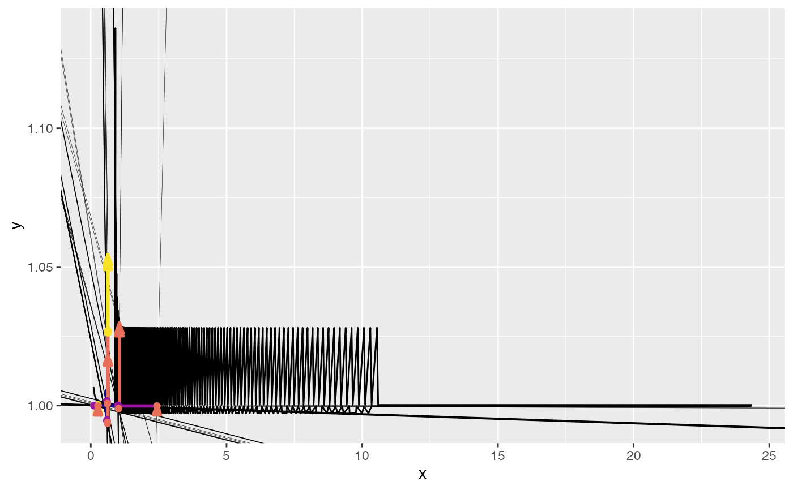

Create rebound path graphs
path_graphs.RdCreate rebound path graphs
Usage
path_graphs(
.analysis_data,
indexed = FALSE,
cases = .analysis_data[[case_colname]] %>% unique(),
graph_types = ReboundTools::graph_types,
grid_types = ReboundTools::graph_types,
graph_params = ReboundTools::path_graph_params,
case_colname = ReboundTools::eeu_base_params$case,
rebound_stages = ReboundTools::rebound_stages,
rebound_segments = ReboundTools::rebound_segments,
graph_df_colnames = ReboundTools::graph_df_colnames
)Arguments
- .analysis_data
Rebound analysis data, likely created by
rebound_analysis().- indexed
A boolean that tells whether to index the graph to its initial path point. Default is
FALSE.- cases
A string list saying which cases in
.rebound_datato include. Default is.analysis_data[[case_colname]] %>% unique(), i.e. all cases in.analysis_data.- graph_types
A string list of graph types to include in the returned object. Default is
ReboundTools::graph_types, i.e. all graph types.- grid_types
A string list of graph types on which grids (guide lines) are to be included. Default is
ReboundTools::graph_types, i.e. include grids on all graph types. SetNULLto eliminate grids.- graph_params
A string list of parameters that control the appearance of this graph. Default is
ReboundTools::path_graph_params, which can be modified and passed as an argument to control graph appearance.- case_colname
The name of the Case column in
.rebound_data. Default isReboundTools::eeu_base_params$case.- rebound_stages
- rebound_segments
- graph_df_colnames
The names of column names in data frames of graph data. Default is
ReboundTools::graph_df_colnames.
Examples
load_eeu_data() %>%
rebound_analysis() %>%
path_graphs(indexed = TRUE)
